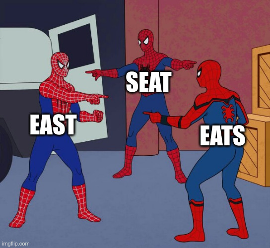

In what concerns the continuous evaluation solving exercises grade during the semester, you should submit until 23:59 of November 1st
(this exercise will still be available for submission after that deadline, but without couting towards your grade)
[to understand the context of this problem, you should read the class #04 exercise sheet]

An anagram is a word or phrase formed by rearranging the letters of a different word or phrase, using all the original letters exactly once.For example, "east, "seat" and "eats" are anagrams, because they all have 1 a, 1 e, 1 s and 1 t. "torso" and "roots" are also anagrams, because they both have 2 o's, 1 r, 1 s and 1 t.
Note that the same can be said about phrases, if we ignore spaces and upper/lower case. For instance, "New York Times" is an anagram of ""monkeys write", and "a gentleman" is an anagram of "elegant man".
We call an anagram class to a set of two or more phrases (which can also be single words) that are anagrams. For instance, the set {"east", "university", "elegant man", "eats", "seat", "a gentleman"} has 2 anagram classes: {"east", "eats", "seat"} and {"elegant man", "a gentleman"}. "university" does not belong to an anagram class because there is no anagram of it in the set.
Given a set of N phrases, your task is to find how many anagram classes it contains.
The first input line contains an integer N: the amount of phrases to consider.
The following N lines give phrases, one per line. Each of these phrases has less than 50 characters and contains only letters (upper or lower case) and spaces. You can be assured that there are no repeated phrases.
The output should be a single line containing the amount of anagram classes found.
The following limits are guaranteed in all the test cases that will be given to your program:
| 1 ≤ N ≤ 105 | Amount of phrases |
| Example Input | Example Output |
20 elegant man east algorithm sorting monkeys write seat Tom Marvolo Riddle coronavirus sort New York Times eats listen silent logarithm teas a gentleman I am Lord Voldemort enlist mergesort carnivorous |
7 |
There are 7 anagram classes in the example input:
Three phrases do not have anagrams: "sorting", "sort" and "mergesort".